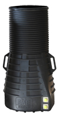

Wasserzählerschacht-Konfigurator
Wählen Sie eine Produktgruppe

Wählen Sie einen Schacht
Wählen Sie eine Rohrdeckung
Wählen Sie einen Deckel
Wählen Sie eine Wasserzähleranlage
Wählen Sie eine PE-Verschraubung mit O-Ring Technik
Wählen Sie das Anschlußgewinde 1“ oder 5/4“
Wählen Sie die Größe der PE-Verbindung
Wählen Sie die Anzahl der Verbinder
Wasserzählerschachtschlüssel 15mm
Ihre Auswahl: